第三步最终验收补修
仅修复新增后保存状态与队列容量恢复。13 张真实 Edge 浏览器截图；课程、文件与评审均为新隔离库中的合成验收数据，不是正式教材
本轮更新静态构建，未停止或重启 4174，临时库路径保持；处理好未保存输入后手动刷新加载新前端。队列终态保留，失败及未确认项仍占待处理容量
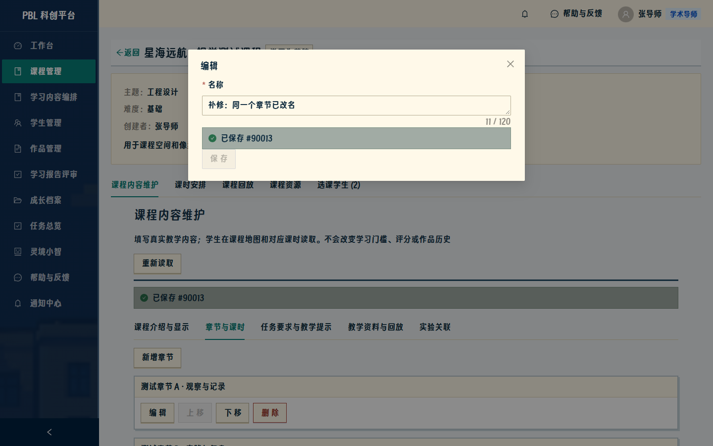
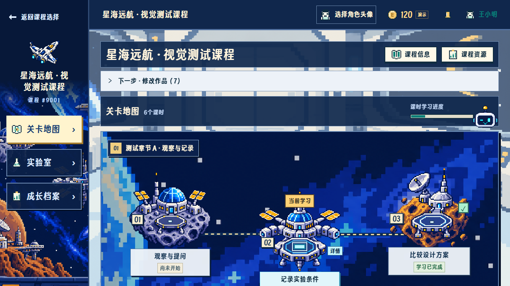
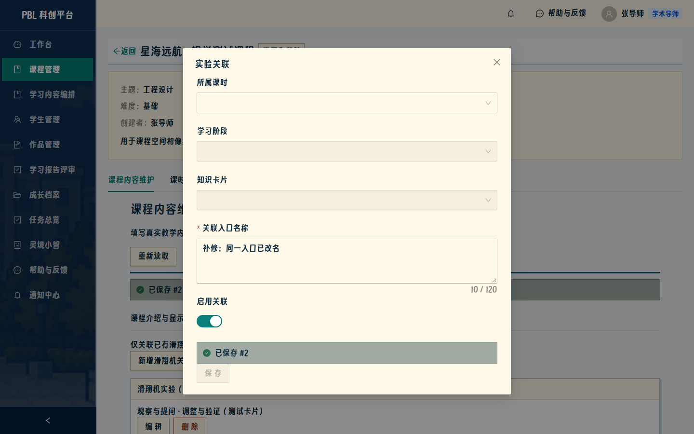
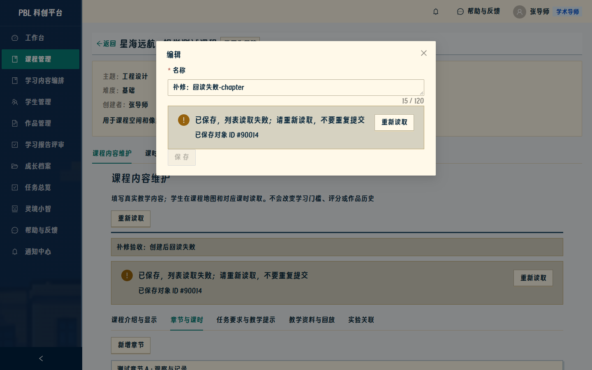
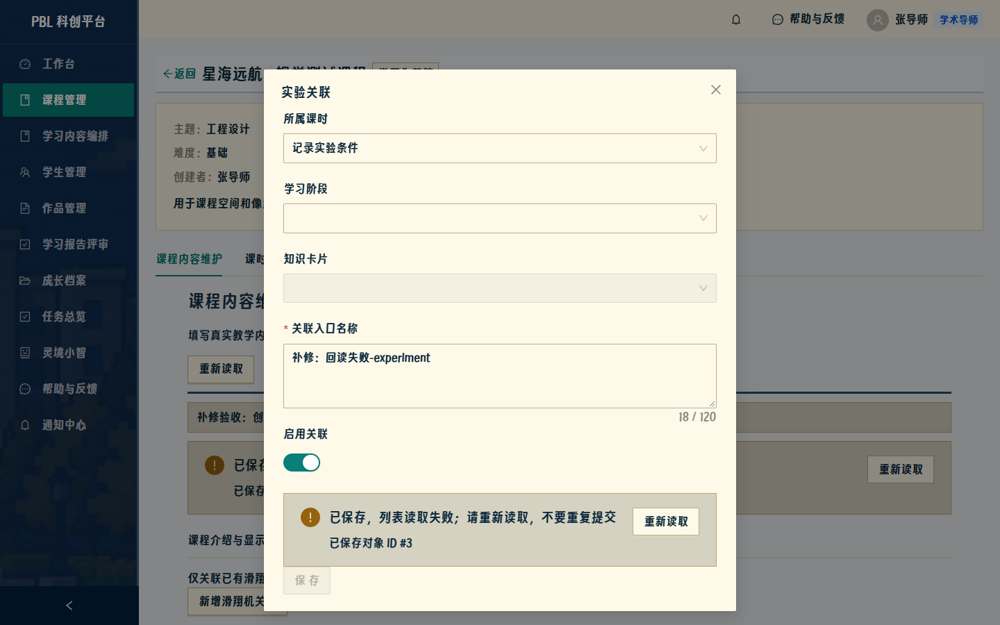
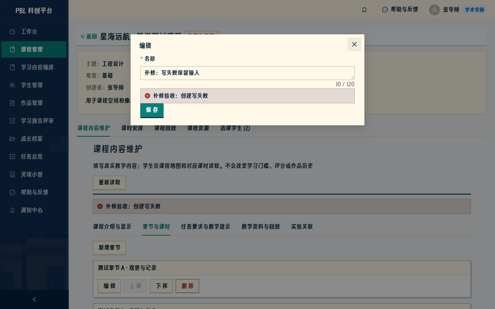
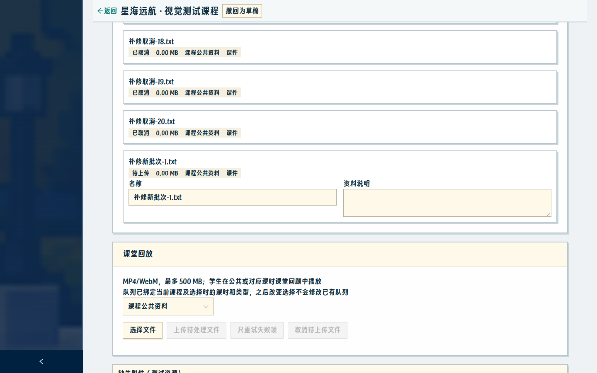
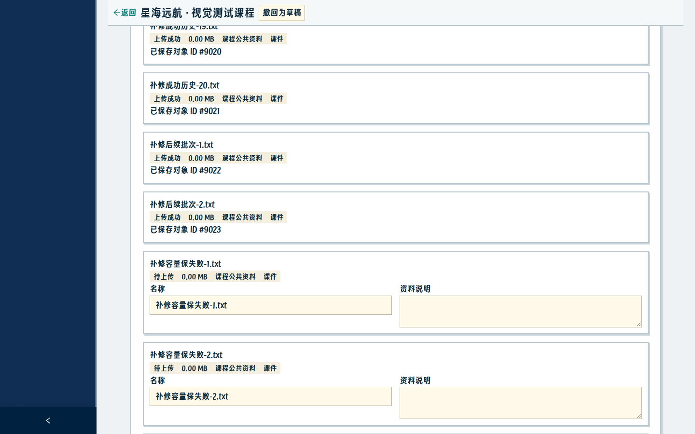
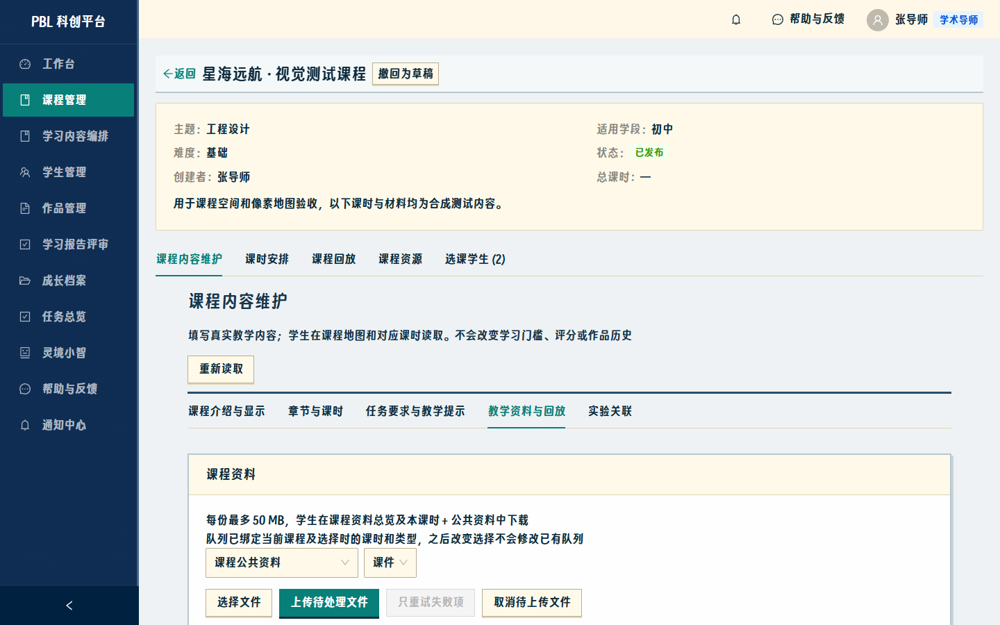
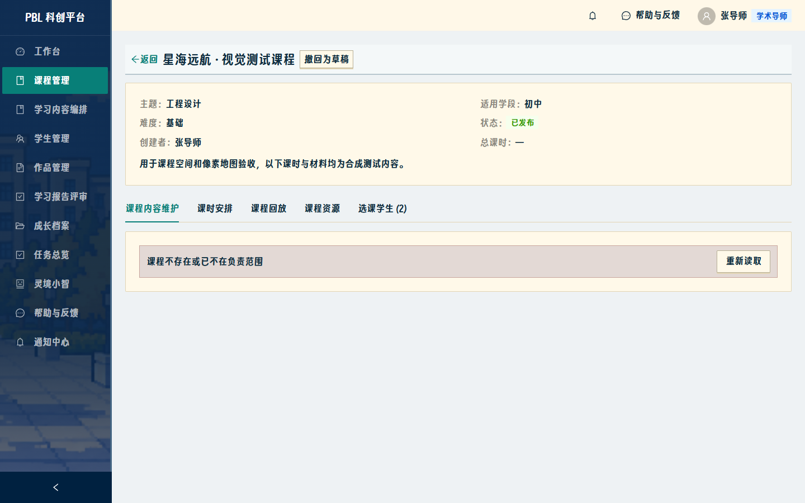
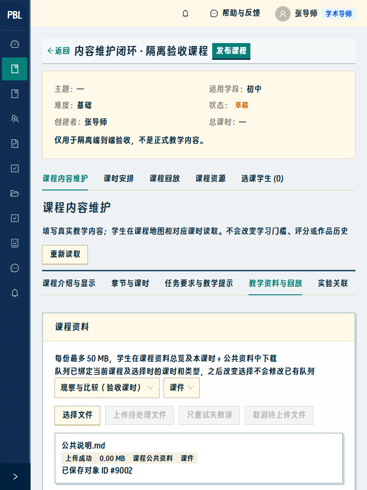
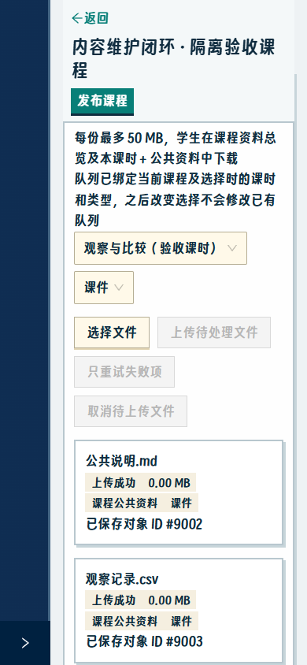
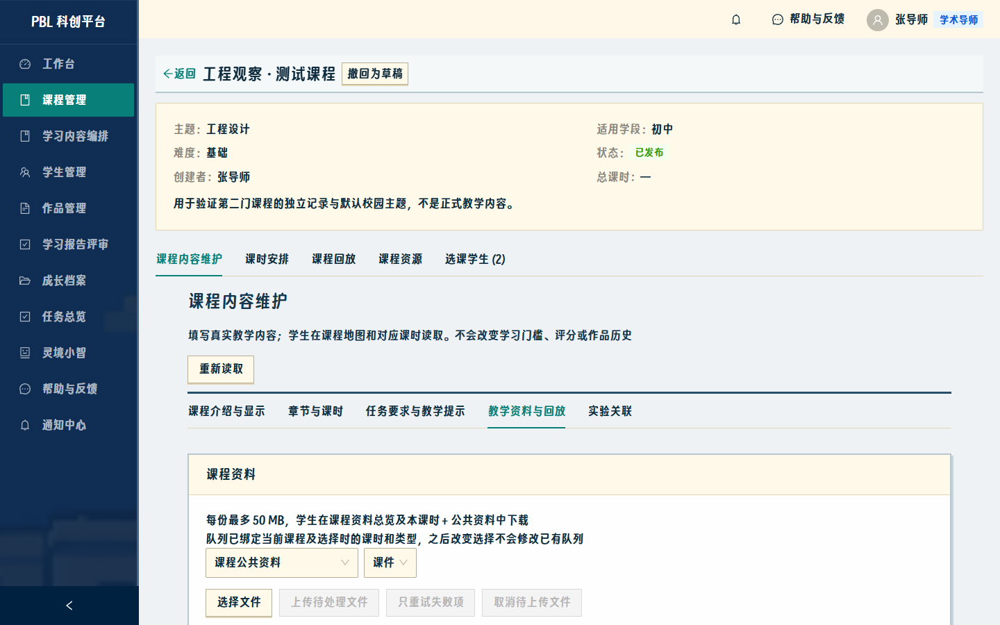
补修前的独立错误取证（不是通过截图）
原件仍在 test-results/root-review-step03；取证退出 0 只表示记录完成。对照 实际错误记录


后端、迁移、权限、评分、试飞、奖励、字体/素材、文案和既有图集不变。补修及相关回归完成后停止，等待最终复核